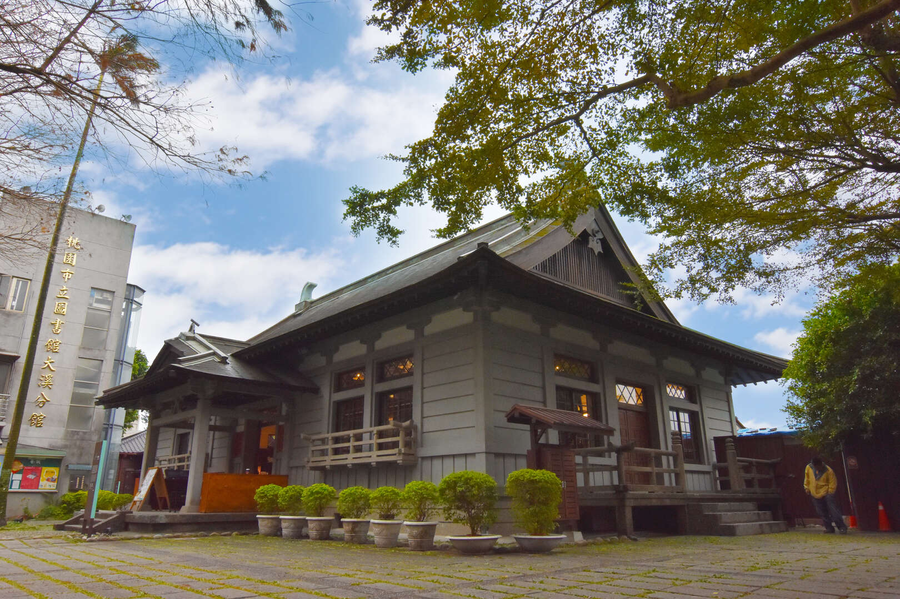
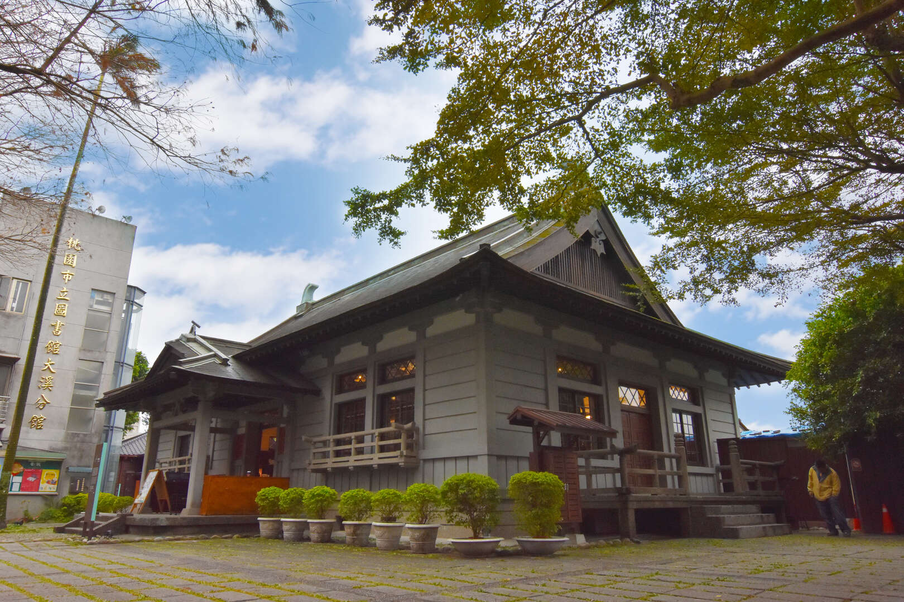

大溪木藝生態博物館﹣武德殿
大溪武德殿落成於昭和十年（西元1935年），二次世界大戰前，日人行軍國主義、提倡武士道精神，在各地修建武德殿，以供警察及青年子弟修練柔道、劍道。 1950年公會堂改為總統行館，設置大溪憲兵隊，並以武德殿為營舍。1999年憲兵隊撤離後，2000年大溪鎮公所進行第一次大規模修復，2001年重新啟用，2004年公告為桃園縣歷史建築。2015年交由木博館管理，2016年5月附屬建築修繕及渡廊重建竣工，目前作為大型特展的展覽空間。
大溪武德殿落成於昭和十年（西元1935年），二次世界大戰前，日人行軍國主義、提倡武士道精神，在各地修建武德殿，以供警察及青年子弟修練柔道、劍道。 1950年公會堂改為總統行館，設置大溪憲兵隊，並以武德殿為營舍。1999年憲兵隊撤離後，2000年大溪鎮公所進行第一次大規模修復，2001年重新啟用，2004年公告為桃園縣歷史建築。2015年交由木博館管理，2016年5月附屬建築修繕及渡廊重建竣工，目前作為大型特展的展覽空間。
